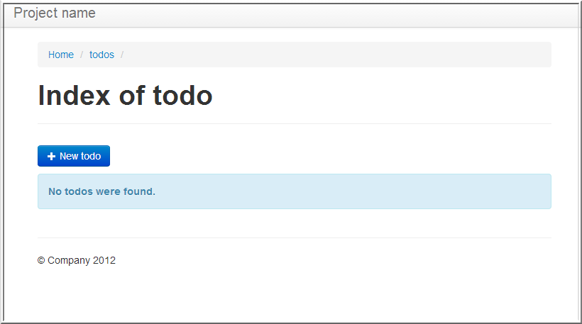

Node.jsでアプリ作成するの、冗長で面倒ですね。
Compoundjsを使うとRailsみたいにScaffold出来ます。
Scaffoldコマンドについて調べるの面倒ですね。
このページでScaffoldコマンドを生成出来ます。便利ですね。

こんな感じの管理画面を作れます。そのままアプリにも出来るかも。
アイテム名（英数字のみにしてください）：
種別：
npm install compound -g
compound init {{collectionName}}
cd {{collectionName}}
npm install
{{output}}
下記コマンドで起動します。
node .
その後、http://localhost:3000/{{collectionName}}sにアクセスすると管理画面が表示されます。
ちなみにhttp://localhost:3000/{{collectionName}}s.jsonにアクセスするとjsonが取れます。
上記手順までだと、コレクションはメモリ上に保存されていますので、nodeを終了したら全部消えてしまいます。
下記はMongoDBに保存する手順です。
MongoDBを立ち上げて、config/database.jsを下記のように書き換えます。
module.exports =
{ "development":
{ "driver": "mongodb"
, "url": "mongodb://localhost/{{collectionName}}"
}
, "test":
{ "driver": "mongodb"
, "url": "mongodb://localhost/{{collectionName}}"
}
, "production":
{ "driver": "mongodb"
, "url": "mongodb://localhost/{{collectionName}}"
}
};
これで、nodeを再起動してもコレクションが保持されます。